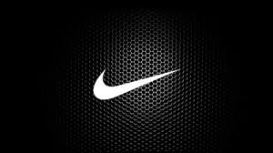
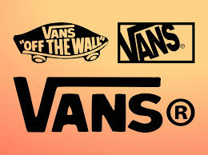
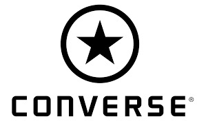
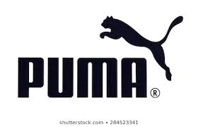
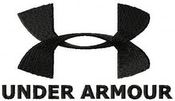
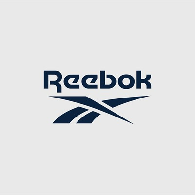

The Adidas shoe brand is a brand trusted by millions of people around the world, perfect for everyday wear. From athletes to casual wearers because Adidas is perfect for anyone, whether you have an active lifestyle or not. Shoes that can be worn from the gym or to the street, that is what Adidas means. Suitable for everyday wear.
Nike is the largest manufacturer of athlete clothing and footwear. The Nike brand is fast gaining ground around the world, especially the Swoosh logo and the slogan "Just Do It". The company was founded in Oregon in 1964 as Blue Ribbon Sports; the name was later changed to Nike in 1971. The company went public in December 1980. In 1984, basketball player Michael Jordan signed an endorsement contract and Nike released the first model of Air Jordan athlete shoes. The NBA banned the shoes, and Air Jordan accelerated Nike's rise to success. Today, Nike produces a wide range of products, including running shoes, tennis, golf and skateboards and running shoes. Nike also owns Hurley International and Converse, operates Niketown retail stores and sponsors many well-known athletes and sports teams for brand recognition.
If you think that only skaters use the quality brand of shoes "Vans", then you are wrong. Sure, the brand is one of the leading shoe manufacturers for coaches, but this does not mean that this is the only direction in which this legendary company is involved. To understand more about Vans shoes, consider their various design solutions. They are only suitable for any formal or informal occasion. By the way, many style icons are called "Vans" men's shoes, one of the most fashionable types of shoes for all its existence.
The most popular shoe manufacturer is the English brand Clarks. It offers high quality models for men, women and children. Clarks shoes are characterized by stylish design, high quality materials and a variety of models.
The Converse brand is arguably one of the most iconic shoe brands ever to exist in modern history. shoe design successfully steals every layer of society whether men or women, old or young, these shoes are styled by almost every society in the world.
Puma SE, branded as Puma, is a German multinational corporation that designs and manufactures athletic and casual footwear, apparel and accessories, which is headquartered in Herzogenaurach, Bavaria, Germany. Puma is the third largest sportswear manufacturer in the world.[4] The company was founded in 1948 by Rudolf Dassler. In 1924, Rudolf and his brother Adolf "Adi" Dassler had jointly formed the company Gebrüder Dassler Schuhfabrik (Dassler Brothers Shoe Factory). The relationship between the two brothers deteriorated until the two agreed to split in 1948, forming two separate entities, Adidas and Puma. Both companies are currently based in Herzogenaurach, Germany
Under Armour, Inc. is an American sports equipment company that manufactures footwear, sports and casual apparel.[3] Under Armour's global headquarters are located in Baltimore, Maryland with additional offices located in Amsterdam (European headquarters), Austin, Guangzhou, Hong Kong, Houston, Jakarta, London, Mexico City, Munich, New York City, Panama City (international headquarters), Paris, Pittsburgh, Portland, San Francisco, São Paulo, Santiago, Seoul, Shanghai (Greater Chinese headquarters), and Toronto. Under Armour was founded on September 25, 1996 by Kevin Plank, a then 24-year-old former special teams captain of the University of Maryland football team. Plank initially began the business from his grandmother's basement in Washington, D.C.
Reebok International Limited (/ˈriːbɒk/) is an Anglo-American footwear and clothing company that has been a subsidiary of German sporting goods giant Adidas since August 2005.Reebok produces and distributes fitness, running and CrossFit sportswear including clothing and footwear. It is the official footwear and apparel sponsor for Ultimate Fighting Championship (UFC), CrossFit, and Spartan Race. In 1958, Reebok was established as a companion company to J.W. Foster and Sons, founded in 1895 in Bolton, Lancashire, England. From 1958 until 1986, Reebok clothing featured the Union Flag to signify the company's British origins.The company's global headquarters are located in Boston, Massachusetts,[11] U.S., with regional offices in Amsterdam, Montreal, Hong Kong, and Mexico City.In November 2016, Reebok announced it would be moving its headquarters from the Boston suburb of Canton to the innovation and design building in the seaport district of South Boston. The reasons for the move, according to the company, were to be located in an urban environment that is more desirable to millennial workers and to “clarify the roles” of United States offices. The move was completed in fall of 2018.